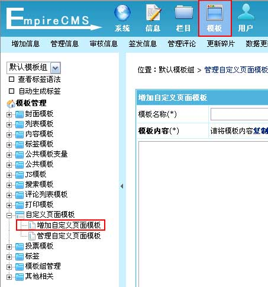
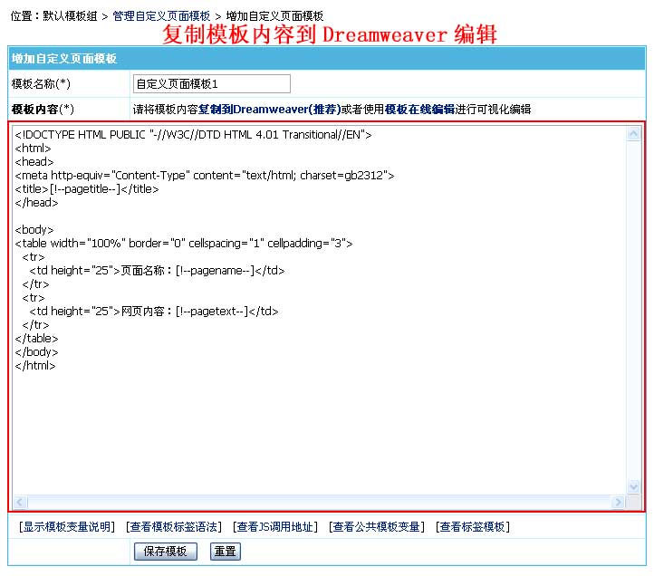
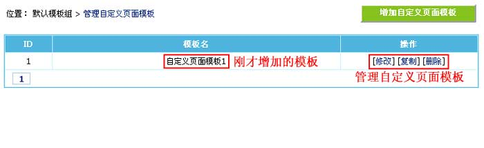
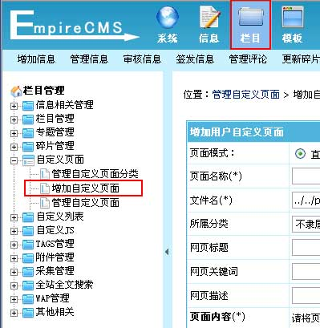
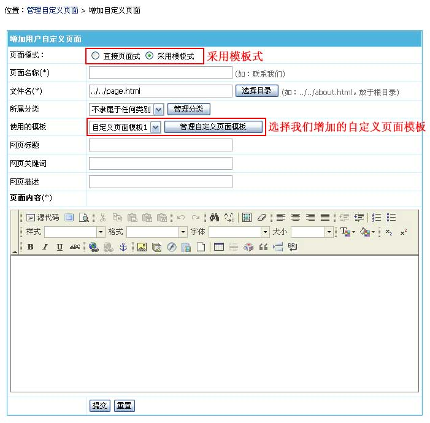

| 自定义页面模板是指自定义页面(单页)使用的模板。 |
|
||
| 一、增加自定义页面模板 | |||||||||
| 1、登录后台，单击“模板”菜单，选择“增加自定义页面模板”子菜单，进入增加自定义页面模板界面： | |||||||||
|  | |||||||||
| 2、进入增加自定义页面模板界面： | |||||||||
|  | |||||||||
自定义页面模板支持的变量：
|
| 二、管理自定义页面模板： |
| 1、增加模板后，进入管理自定义页面模板界面： |
|  |
| 三、增加自定义页面时使用模板： |
| 1、登录后台，单击“栏目”菜单，选择“增加自定义页面”子菜单，进入增加自定义页面界面： |
|  |
| 2、进入增加自定义页面界面： |
|  |